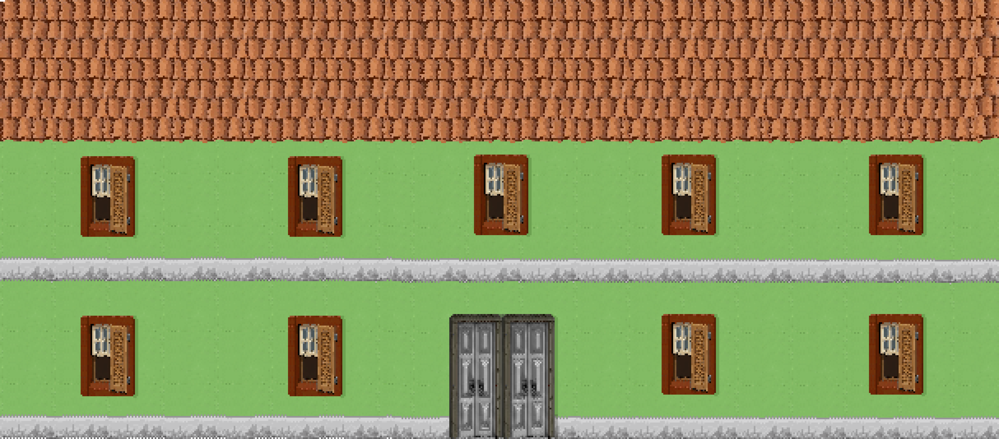

O Alienista: Apresentação do Projeto
← index
A Premissa do Jogo
Bem-vindos ao diário de desenvolvimento de O Alienista, um jogo focado em narrativa, exploração e gestão de sanidade mental, sendo desenvolvido na Godot 4.
📖
O Alienista
A obra que inspira o jogo. Acompanhamos o Dr. Simão Bacamarte e sua fundação da Casa Verde, questionando a fina linha entre a loucura e a razão.
✅ OBJETIVO DO PROJETO Traduzir a ironia e a crítica social da obra de Machado de Assis para um ambiente interativo em pixel art, onde as escolhas do jogador afetam o destino da cidade de Itaguaí.
Mecânicas Principais
O loop de gameplay é dividido entre diagnosticar os cidadãos e gerenciar a própria sanidade e reputação do Doutor Bacamarte.
🧠
Sistema de Sanidade Dinâmico
A sanidade não é apenas uma barra de vida, mas uma lente através da qual o jogador vê o mundo:
- Diálogos mudam dependendo do nível de sanidade.
- Alucinações visuais começam a aparecer no mapa.
- Pacientes podem ser internados injustamente se você estiver confuso.
1
Jogador
Avalia um cidadão de Itaguaí
→
Sistema
Calcula a "Loucura" baseada em traços
[Se diagnóstico for controverso]
→
Casa Verde
Recebe novo interno
→ Revolta da população aumenta
Roadmap Inicial
Muito trabalho pela frente. Aqui estão os marcos principais do desenvolvimento da versão Alpha.
▸ ALPHA MILESTONES
✓
Estrutura base da Engine (Godot 4)
✓
Tilesets de Itaguaí (Centro Histórico)
Lógica do Medidor de Sanidade
Sistema de Diálogos Ramificados
Interface da Casa Verde